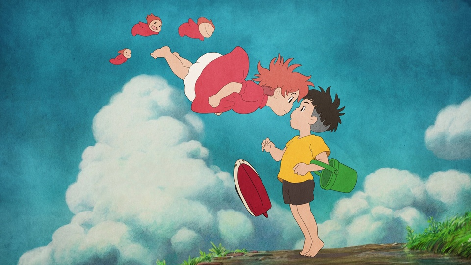

推荐作品-悬崖上的金鱼姬


崖上的波妞》（崖の上のポニョ）是由东宝国际、Encore Films、Golden Village Pictures发行，宫崎骏执导并担任编剧，神月柚莉爱、土井洋辉、山口智子、长岛一茂、天海祐希等配音的冒险动画片，于2008年7月19日在日本上映，于2020年12月31日在中国内地上映。
该片讲述了海神的女儿波妞从深海出逃玩耍，却被困在玻璃瓶里冲到岸上，碰巧被住在岸边悬崖的宗介救出，两人因此相识。但是波妞的父亲魔法师藤本，认为人类世界肮脏丑陋，强行把波妞带回海里。面对父亲的阻挠、席卷小镇的海啸，以及永远失去魔法的威胁，波妞仍然大胆而坚决地决定要变成人类跟宗介在一起的故事。
2008年，获得第65届威尼斯电影节金狮奖（提名）；2009年，获得第32届日本电影学院奖最佳动画片、第3届亚洲电影大奖最佳电影（提名）、第8届华盛顿影评人协会奖最佳动画片（提名）、第22届芝加哥影评人协会奖最佳动画片（提名）。